Waifu of re:zero
-
Emilia
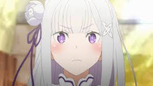
-
Rem
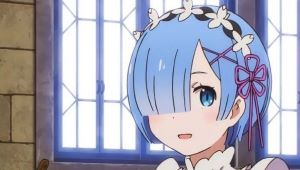
-
Echidna
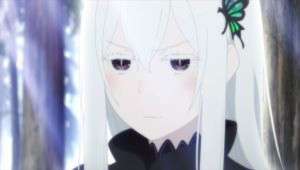
-
Shim
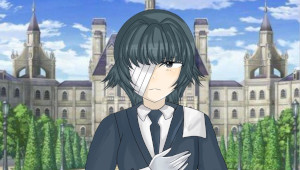
-
Crush
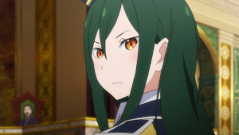
-
Priscilla
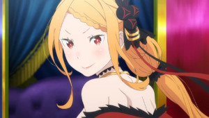
Read Tsundere for more info
| Character | Information | |
|---|---|---|
|
Emilia
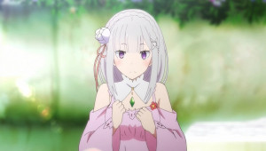 |
Emilia (エミリア) is the main heroine and deuteragonist of the Re:Zero kara Hajimeru Isekai Seikatsu series. She is a half-elf and a candidate to become the 42nd monarch of the Dragon Kingdom of Lugunica in the Royal Selection, who met Natsuki Subaru on the day he was summoned to the world. Emilia has played a supporting role in every arc, with major and pivotal roles in more than half of them. Born and raised by her aunt in Elior Forest, Emilia is a half-elf terribly beloved by the spirits. However, during the Permafrost of Elior Forest, her memories were locked away, and she was frozen for approximately 100 years. After being watched over by Puck, she eventually became a Royal Selection candidate in the hopes of unfreezing the residents of the forest. Through many trials and tribulations, including mass discrimination, she came into her role well, holding many feats under her belt, including helping to defeat the Sin Archbishop of Greed and the Great Rabbit, becoming the administrator of the Pleiades Watchtower, and forming an alliance with Vollachia. | |
| Rem 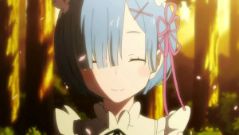 |
Rem (レム) is a maid in service of Margrave Roswaal L. Mathers alongside her sister, Ram. She is one of the main supporting characters of Re:Zero, with major roles in Arc 2, Arc 3, and Arc 7, and a supporting role in Arc 8, Arc 9, and Arc 10. During the first half of Arc 2, she was the secondary antagonist. Born the younger twin of Ram, Rem, having an inferiority complex, was attached to and only relied on her sister, caring for no other. Following her sister after the destruction of her home with the Oni Tribe, she became a maid of the Roswaal Manor, working hard to bear the burden that her sister no longer can with the intent of becoming her horn in her place.[5] However, she began to open up after Natsuki Subaru's arrival to the mansion, falling for him. At the end of Arc 3, she had her name and memories eaten by Lye Batenkaitos and subsequently fell into suspended animation. She later awoke at the end of Arc 6 bearing amnesia. | |
|
Echidna
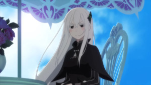 |
Echidna (エキドナ) was the Witch of Greed. Mentioned throughout the series, particularly for her connection to Roswaal and Beatrice, she formally debuted in Arc 4 as a major supporting character and later secondary antagonist. She was a woman who, in her curiosity, strived to learn anything and everything there was to know. In life, she was known as the Witch of Wisdom and and was a member of the Witch Era Party. Following her death, she was the overseer of the Sanctuary’s Castle of Dreams who preserved the souls of the other Witches of Sin within it. Following the events of Arc 4, she took over the body of Ryuzu Shima, becoming Omega. Holding the other witches within a special glintstone, she now travels with the members of her party in a journey across the world. | |
|
Shim
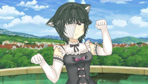 |
Shim (シム) is a character from the Re:Zero series. She is a mysterious girl who appears in the story and has a significant impact on the plot. Shim is known for her unique abilities and her connection to the main characters, particularly in the context of the challenges they face. Her background and motivations are gradually revealed as the story progresses, adding depth to her character and influencing the events around her. | |
|
Crush
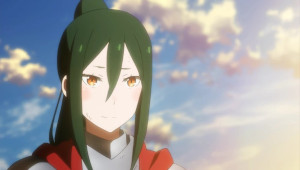 |
Crusch Karsten (クルシュ・カルステン) is the Matriarch of House Karsten and a candidate to become the 42nd monarch of Lugunica. She played a major role in Arc 3 and Arc 10 and a supporting role in Arc 5. She was also one of the main protagonists of The Dream the Lion King Saw. Daughter of the former Duke Karsten, she was raised in high society, where she grew to love the sword. Befriending both Fourier Lugunica and Ferris, she became incredibly popular among her people, eventually coming to be known for her skill on the battlefield as the Valkyrie and in office as the next Duchess. Following the demise of the Royal Family, which included Fourier, she was discovered to be a candidate in the Royal Selection. Following the belief that the country has become reliant on the Divine Dragon, she has made her goal to strengthen the country and sever the covenant with the dragon. | |
|
Priscilla
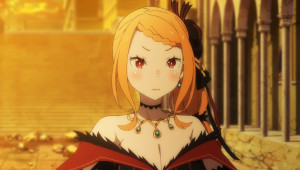 |
Priscilla Barielle (プリシラ・バーリエル) is an exiled imperial princess of the Sacred Vollachia Empire, the Matriarch of House Barielle, and a candidate to become the 42nd monarch of Lugunica. While only a supporting character in Arc 3 and Arc 5, she had a major role in Arc 7 and Arc 8. She was also one of the main protagonists of The Tale of the Scarlet Princess. Originally born in Vollachia as one of the many children of the country’s previous emperor, she attempted to secure victory in its Imperial Selection Ceremony. Despite having become one of the frontrunners, she ultimately lost when her brother and closest aide faked her death. Afterward, following the death of her first husband, she was smuggled into Lugunica, went through several husbands, and ended up married to the late Leip Barielle, who discovered her as one of the Royal Selection Candidates. | |
Who is Ash?
He who has the biggest hatred for Rem. He is a member of the Larpers Cult and a student to the Reader. After meeting the Reader he started actually reading the series himself.
Why does Ash hate Rem?
However it is not that Ash started hating her after reading, his opinions were formed for something his group is famous for, which is of course larping. He didn't check the source material, but he still complains about scenes that he shouldnt even know of! I think that part of his problems comes from how story treats Rem's mistakes or just straight out bad things she does.
Vote for your favorite re:zero girl!
We want to know who is the best girl of re:zero. Please vote below!